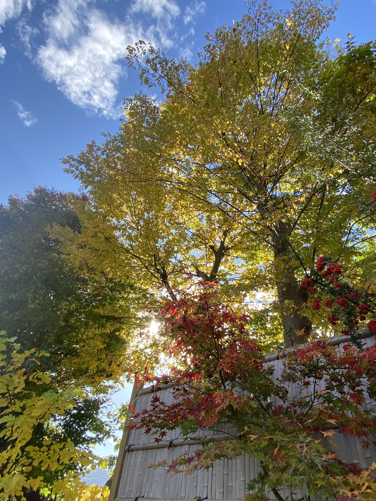
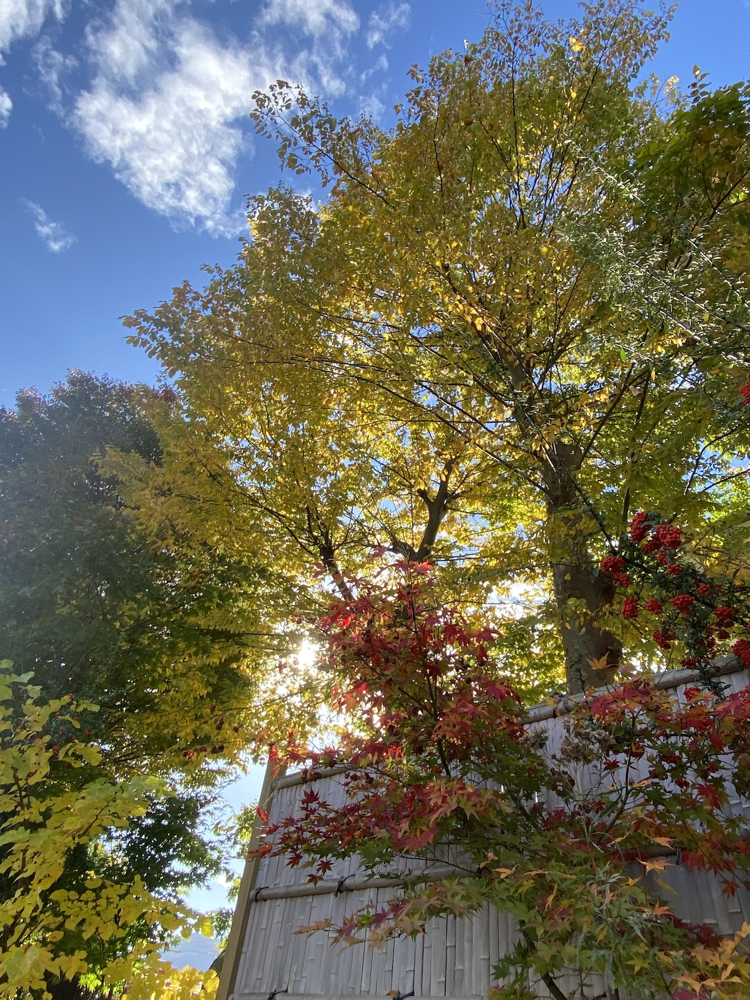
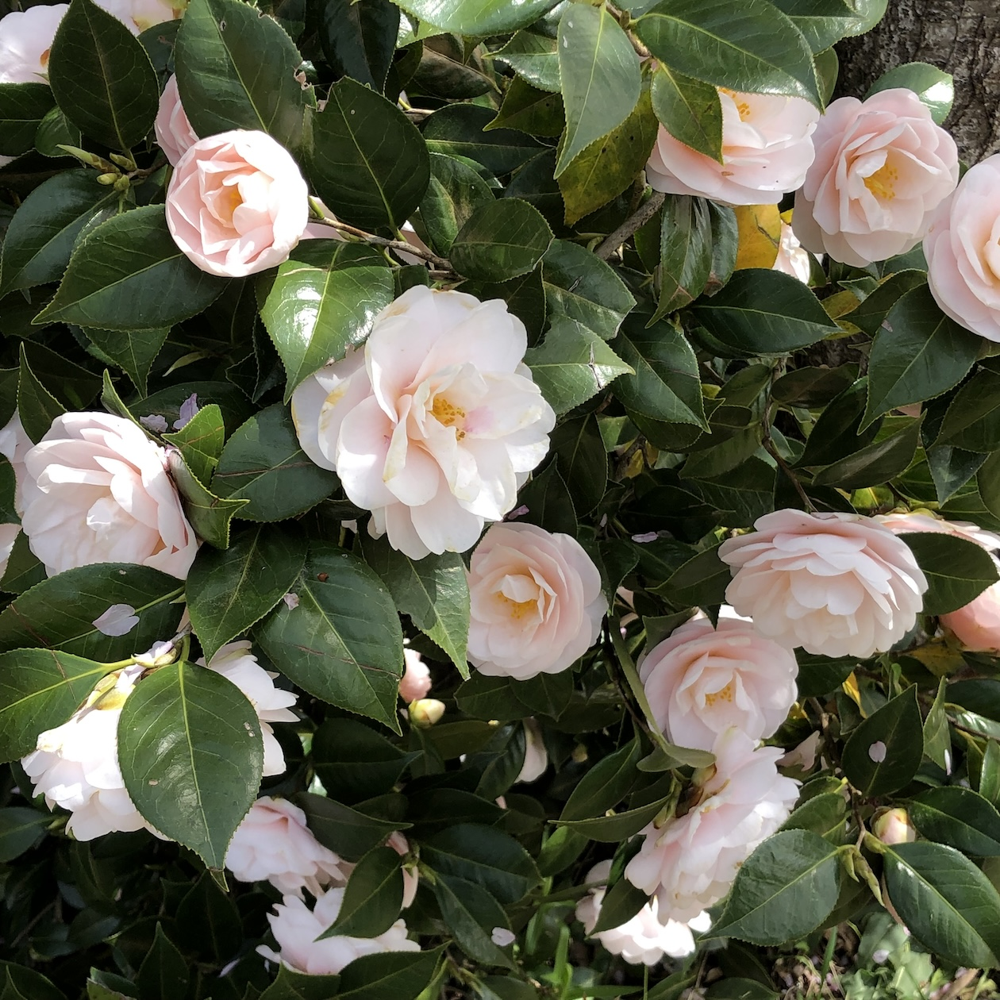
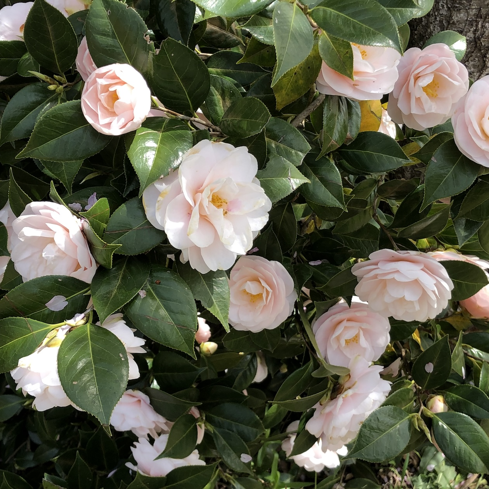

My Portfolio
about me
居住地 長野県
大学卒業後、営業や一般事務職を経験後、秘書としてスタートアップへ転職。
東京から長野へUターン。
個人で議員ホームページを制作したことを通して、何かをカタチにする仕事に興味を持ちました。
独学でWeb制作の勉強をしている中、職業訓練校の存在を知り入所。
Web関連言語以外も学ぶ中で、一番強く惹かれたのはWeb制作でした。
これまでの業務を通して培ったきた傾聴、折衝力を活かし、
市場を分析した上で、お客様の想いを最適な形でカタチにするデザイナーを目指します。
Skill
Excel
Word
PowerPoint
Access
C
HTML
CSS
JavaScript

Procreite
ladder
Work
hobby
絵を描くこと、景色を眺めること、おいしいものを食べること


 

 
